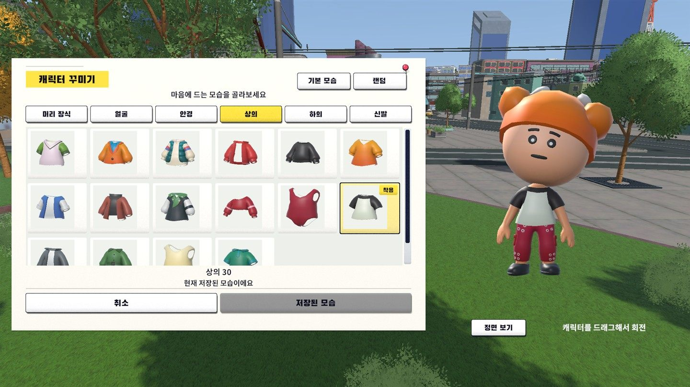

표적이 골목에서 사라지면, 어디로 쫓아갈까?
추격자가 표적을 놓친 뒤에도 다음 길을 고를 수 있어야 했습니다. 지상과 옥상을 계단으로 잇고, 근처에서 들리는 목소리와 휴대폰 메시지를 추리 단서로 썼습니다.
레벨 디자인
기존 도시 에셋으로 골목과 실내, 계단과 옥상을 잇는 동선을 구성했습니다. 지상에서 시야를 놓친 추격자가 다음 길을 짐작할 수 있도록, 길 위에서 계단 입구와 공중 보행로가 함께 보이게 배치했습니다.
플레이 검증에서는 눈에 보이는 길과 실제로 걸을 수 있는 길을 대조했습니다. 계단을 내려갈 때 낙하 자세가 나오거나 옥상에 착지했는데 발이 뜨는 구간을 찾아 충돌체와 이동 처리를 다듬었습니다.
음성과 채팅
표적의 꼬리색은 누구에게 말하느냐에 따라 가치가 달라집니다. Photon Voice로 가까운 플레이어의 목소리를 들을 수 있게 하고, 멀리 있는 상대에게는 휴대폰으로 전화를 걸 수 있게 했습니다. 통화 중에도 주변 사람은 내 목소리를 들을 수 있어, 정보를 건넬 장소까지 선택하게 됩니다.
생존자는 1:1로, 관전자는 공용방에서 대화합니다. 달리다가 휴대폰을 열어 메시지를 찾을 필요가 없도록, 보낸 사람과 첫 문장을 화면에 띄우고 단축키 한 번으로 그 대화를 열게 했습니다.
튜토리얼
처음부터 정답을 보여 주면 꼬리를 잡는 조작만 익히게 됩니다. 연습에서는 먼저 단서를 주워 휴대폰에서 다른 후보들의 꼬리색을 추리하고, 마지막에 자기 표적을 지목합니다. 표적이 확인되면 상대가 달아나고, 플레이어가 직접 따라잡아 힘겨루기에 들어갑니다.
대기방과 커스터마이징
옷과 장식은 이름만으로 구분하기 어려워 썸네일로 고르게 하고, 선택한 결과를 오른쪽 캐릭터에 바로 반영했습니다. 대기방에서도 같은 자리에서 옷을 갈아입을 수 있습니다. 돌아오면 참가자 카드에 각자의 상반신이 보여, 경기가 시작되기 전에 서로의 모습을 확인할 수 있습니다.

팀 공동 시스템
택시기사가 운전 중에도 생존자를 찾을 수 있도록 대상 목록과 추적 대상 강조를 작업했습니다. 관전 화면에서는 목록에서 지원할 중개자 역할을 고를 수 있게 했습니다.
같은 발자국도 꼬리색을 추리한 사람에게는 해당 색으로, 아직 모르는 사람에게는 흰색으로 보이게 했습니다. 표식 이벤트에서는 보유자의 지도 표시와 표식을 지우는 정리소의 모델과 아이콘을 작업했습니다.